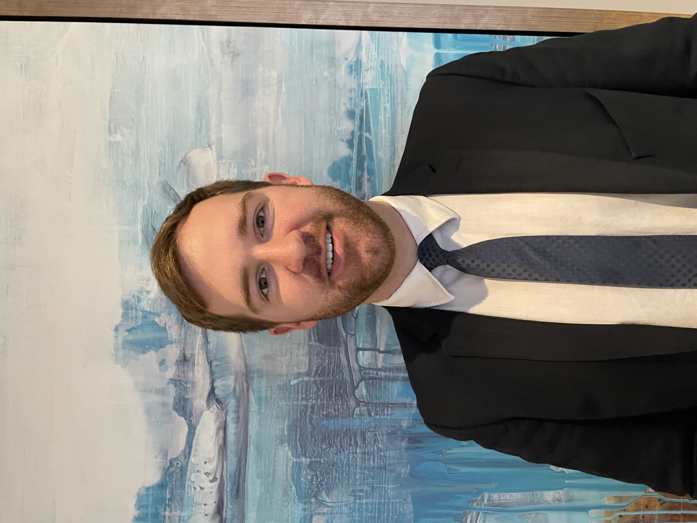

Zach Crozier

About Me
I am a Computer Science student at the University of Cincinnati. I have a passion for tinkering and figuring out how things work, and am a passionate learner.
I'm looking forward to the challenges and experiences that await in the world of software development!
Education
- Bachelor of Science, Computer Science, University of Cincinnati (2022-present)
- Expected Graduation: Spring 2027
Work Experience
Software Engineer Intern - Losant IoT (May-Aug 2023)
- Created user feature to link Azure Data Tables to the company's platform
- Developed new solutions for automated customer communications
- Debugged vector databases for company's AI integration
- Contributed merged code to the company’s platform within the first weeks of onboarding
- Engaged in manual QA testing to uncover user-facing bugs
Front Office Supervisor - Hyatt Regency Cincinnati (March 2020-May 2023)
- Managed the workflow and key tasks of 10+ Front Desk/Office staff
- Administered performance reviews of staff, as well as relevant disciplinary actions and reports
- Coordinated training and on-boarding of 25+ staff members
- Adapted departmental operations by incorporating new techniques to meet challenges emerging from the COVID-19 pandemic
- Utilized Excel, Opera, and other software solutions while managing department
Front Desk Agent - Hyatt Regency Cincinnati (October 2019-March 2020)
- Interacted extensively with hotel guests as part of the public face of property while anticipating guest wants and needs
- Exceeded goals and lead department in upsells and rewards program enrollments
- Handled cash transactions and routinely balanced a cash bank
- Operated various software systems to ensure guest room availabilities and effective communications between departments
Skills
Computer:
- Functional knowledge of JavaScript, Python, C++, HTML, and Git
Leadership:
- History of leading a team and managing/supervising employees within a corporate structure
Social:
- Extensive experience in customer service dynamics
Other